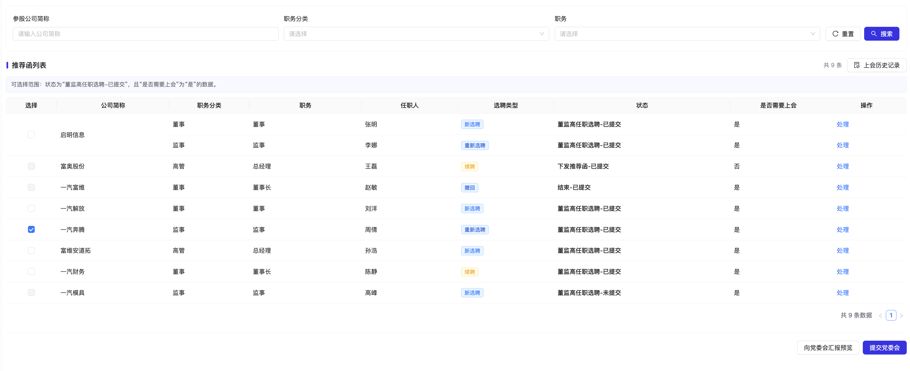
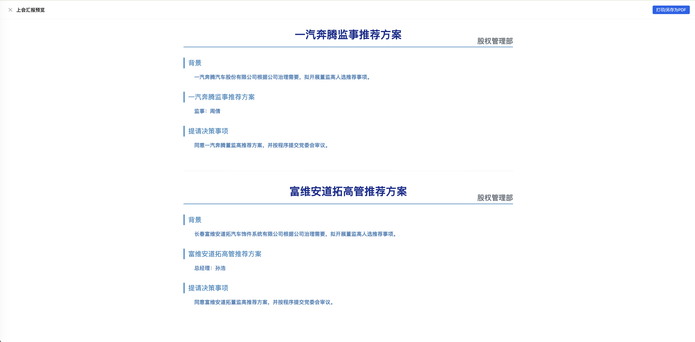
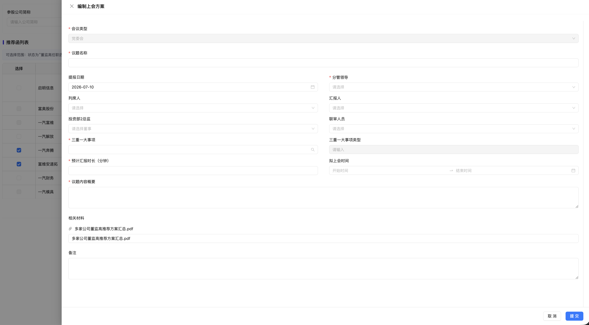
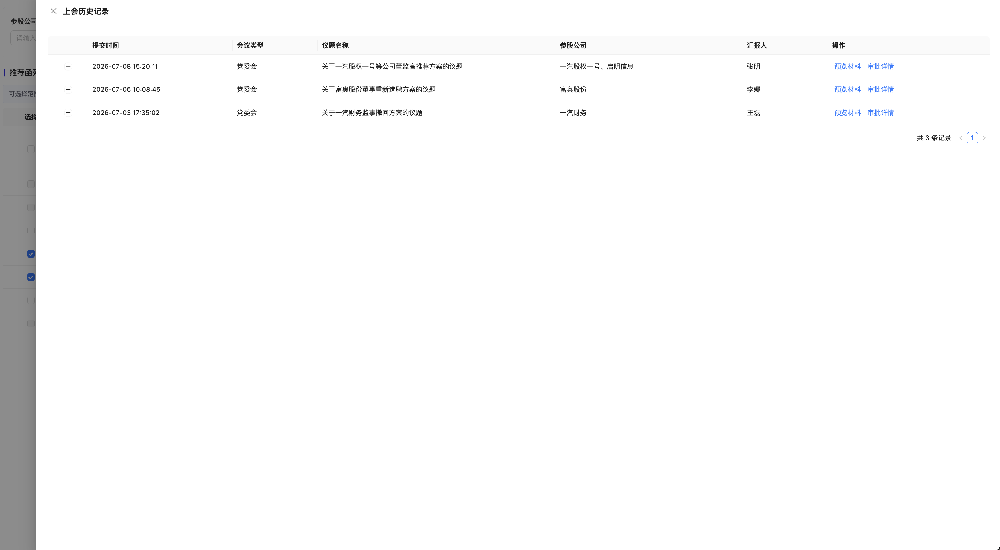

当前董监高选聘流程中，提交党委会与上会汇报预览原本分散在单家公司维度，无法很好支持多家参股公司统一提交、统一预览和统一留痕。此次变更目标是将党委会提交能力前置到列表批量操作中，并补充状态标识、历史记录和审批详情。
| 模块 | 变更内容 | 说明 |
|---|---|---|
| 推荐函列表 | 新增“是否需要上会”“是否已提交”展示 | 帮助用户判断哪些数据可参与批量提交党委会。 |
| 批量上会 | 支持多家参股公司一起提交党委会 | 列表勾选符合条件的数据后，统一生成上会汇报预览和提交党委会方案。 |
| 上会预览 | 多家公司 PDF 汇报材料按公司分段展示 | 预览中各公司内容顺序展示；打印/另存 PDF 时下一家公司新启一页。 |
| 上会历史记录 | 记录每次提交党委会的数据 | 历史记录支持查看提交信息、材料预览和审批详情。 |
| 状态流转 | 董监高选聘步骤提交不直接进入下发推荐函 | 仅更新“是否已提交”；提交党委会审批后才进入“下发推荐函”。 |
| 角色 | 使用场景 | 诉求 |
|---|---|---|
| 业务经办人 | 处理董监高选聘并提交党委会 | 能快速筛选可上会数据，批量生成材料并提交审批。 |
| 部门负责人/分管领导 | 审批上会方案 | 能看到本次提交的公司范围、议题概要和相关材料。 |
| 系统管理员/后续接口替换者 | 替换假数据接口 | 前端状态与数据结构清晰，便于对接真实接口。 |
| 动作 | 前置条件 | 结果 |
|---|---|---|
| 董监高选聘步骤提交 | 详情页必填项校验通过 | 仅更新“是否已提交”为已提交，仍停留在董监高任职选聘阶段。 |
| 勾选列表数据 | 董监高任职选聘-已提交，且是否需要上会为是 | 数据可被选择并参与批量提交。 |
| 提交党委会 | 至少选择一条符合条件的数据，并完成上会方案必填项 | 生成审批，记录上会历史。 |
| 党委会审批通过 | 审批流程完成 | 进入下发推荐函阶段。 |




| 编号 | 验收项 | 通过标准 |
|---|---|---|
| AC-01 | 列表列展示 | 列表展示“是否需要上会”和“是否已提交/提交状态”相关信息。 |
| AC-02 | 选择规则 | 仅董监高任职选聘-已提交且需要上会的数据可被勾选。 |
| AC-03 | 批量预览 | 多家公司预览按公司完整分段，不混排。 |
| AC-04 | 打印分页 | 打印或另存 PDF 时下一家公司从新页面开始。 |
| AC-05 | 提交党委会 | 填写编制上会方案并提交后，抽屉关闭，生成历史记录和审批信息。 |
| AC-06 | 历史记录 | 历史记录可查看表单详情、预览材料和审批详情。 |
| AC-07 | 状态流转 | 董监高选聘步骤提交不直接进入下发推荐函，党委会审批后才进入。 |
说明：当前文档按假数据/前端交互设计生成，后续接口替换时需保持字段语义一致。